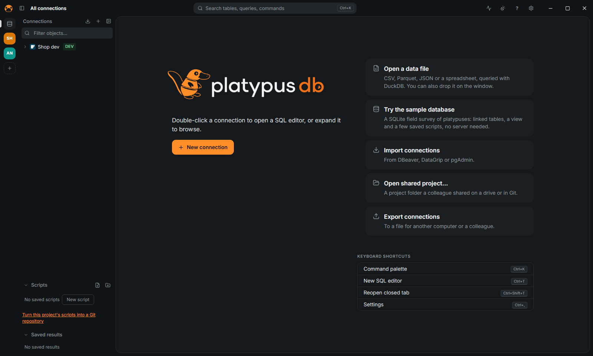

Primeros pasos
Instala PlatypusDB, abre una conexión y aprende las pocas teclas que hacen la mayor parte del trabajo. Todas las funciones, área por área, están en FEATURES.md.

Instalación
Descarga el instalador para tu sistema desde la página de versiones: .exe o .msi para Windows, .dmg para macOS, .AppImage, .deb o .rpm para Linux. La app se actualiza sola (consulta Actualizaciones).
Copia portátil: pon el ejecutable en una carpeta, junto a una carpeta data vacía. Las conexiones, los ajustes, el historial y los scripts viven entonces en data, y la carpeta se puede mover a otro ordenador o a una memoria USB.
Primera conexión
- Abre PlatypusDB y haz clic en Nueva conexión, o pega una URL de conexión (
postgres://…,mysql://…, una URL JDBC o una cadena ADO.NET). - Elige la base de datos en la cuadrícula de logos. Si necesita un driver que aún no está instalado (Snowflake, BigQuery, Databricks y Trino, DuckDB, Oracle, IBM Db2), la app ofrece descargarlo enseguida; Cancelar deja el formulario como está.
- Rellena el formulario y haz clic en Probar la conexión y luego en Guardar.
- Haz doble clic en la conexión para abrir un editor SQL, o expándela para explorarla.
El formulario se explica en Conectar; cada base de datos tiene su propia página en Bases de datos.
¿No tienes una base de datos a mano? Haz clic en Probar la base de datos de ejemplo en la pantalla de bienvenida: una base de datos SQLite con el censo de ornitorrincos, con tablas relacionadas, una vista y algunos scripts guardados.
Las teclas que conviene aprender primero
Cada acción, conexión y tabla está a unas pocas letras de distancia en la paleta de comandos.
| Teclas | Acción |
|---|---|
Ctrl+K | Paleta de comandos |
Ctrl+Enter | Ejecuta la sentencia bajo el cursor (o la selección) |
Alt+X | Ejecuta el script |
Ctrl+Space | Autocompletado |
Ctrl+Shift+F | Da formato al script (o a la selección) |
Ctrl+Shift+E | Explica la sentencia bajo el cursor |
Ctrl+T | Pestaña nueva |
En macOS usa Cmd en lugar de Ctrl. Todos los atajos se pueden cambiar en Ajustes › Atajos de teclado; la lista completa está en SHORTCUTS.md.
Siguientes pasos
Ejecuta consultas, edita datos, o lee Seguridad antes de conectarte a producción.